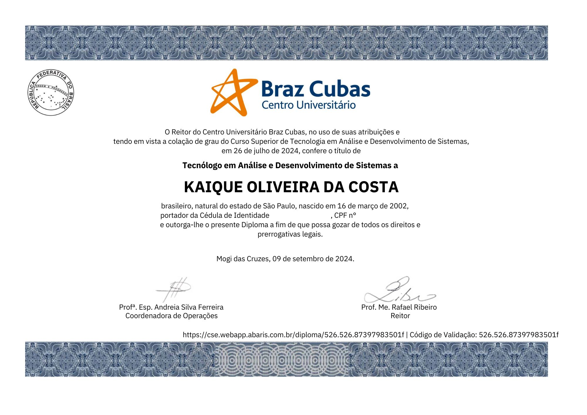
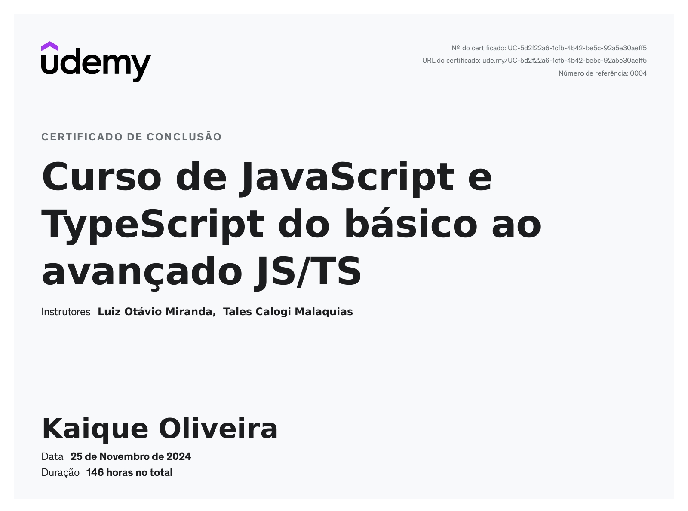
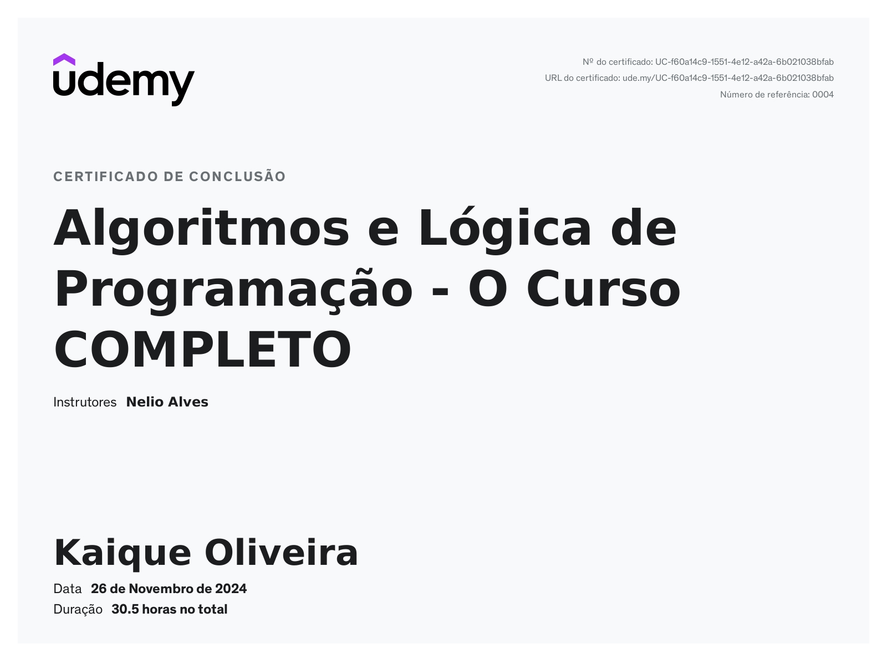
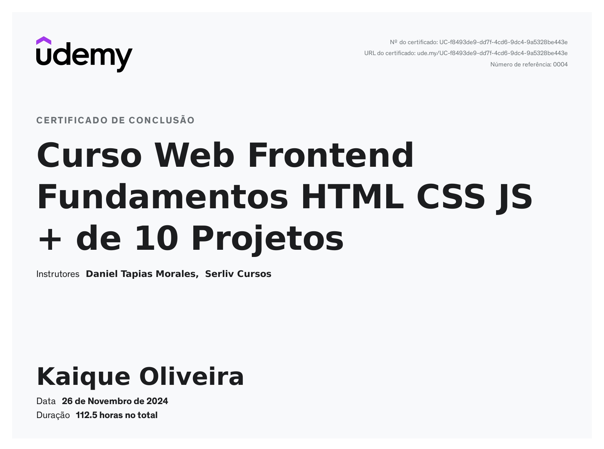

Aqui estão algumas das certificações que conquistei ao longo da minha carreira como desenvolvedor.
Data de Conclusão: Julho de 2024
Data de Conclusão: Novembro de 2024
Data de Conclusão: Novembro de 2024
Data de Conclusão: Novembro de 2024
